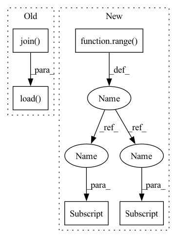

Pattern ID :3443
Before Change
import yaml
import os
fs = open(os.path.join( private_config_path, "config.yaml") , encoding="UTF-8")
private_config = yaml.load( fs, Loader=yaml.FullLoader)
dirs = []
if xlabel is None:
xlabel = DEFAULT_X_NAME
After Change
scale_dict = {}
if misc_scale_index is None:
misc_scale_index = []
for i in range( len(qualities)) :
if i in misc_scale_index:
scale_dict[qualities[i] ] = misc_scale[misc_scale_index.index(i)]
else:
scale_dict[qualities[i] ] = 1
_, _, lgd, texts = plot_util.plot_results(results, xy_fn= lambda r, y_names: csv_to_xy(r, DEFAULT_X_NAME, y_names,
scale_dict, x_start=x_start, y_bound=y_bound,
remove_outlier=remove_outlier),In pattern: SUPERPATTERN
Frequency: 3
Non-data size: 5
Instances Fragment ID: 13239346
Project Name: xionghuichen/rlassistant
Commit Name: c960619032588e7490bfcecc6c8aa20a04a0bddf
Time: 2020-12-21
Author: zpcxh95@outlook.com
File Name: RLA/easy_plot/plot_func.py
M Class Name: AnonimousClass
N Class Name: AnonimousClass
M Method Name: plot_res_func(17)
N Method Name: plot_res_func(19)
M Parent Class:
N Parent Class:
M File Name: RLA/easy_plot/plot_func.py
N File Name: RLA/easy_plot/plot_func.py
M Start Line: 91
M End Line: 173
N Start Line: 95
N End Line: 150
Before Change
import yaml
import os
fs = open(os.path.join( private_config_path, "config.yaml") , encoding="UTF-8")
private_config = yaml.load( fs, Loader=yaml.FullLoader)
dirs = []
if xlabel is None:
xlabel = DEFAULT_X_NAME
After Change
scale_dict = {}
if misc_scale_index is None:
misc_scale_index = []
for i in range( len(qualities)) :
if i in misc_scale_index:
scale_dict[qualities[i] ] = misc_scale[misc_scale_index.index(i)]
else:
scale_dict[qualities[i] ] = 1
_, _, lgd, texts = plot_util.plot_results(results, xy_fn= lambda r, y_names: csv_to_xy(r, DEFAULT_X_NAME, y_names,
scale_dict, x_start=x_start, y_bound=y_bound,
remove_outlier=remove_outlier), Fragment ID: 13239344
Project Name: xionghuichen/rlassistant
Commit Name: c960619032588e7490bfcecc6c8aa20a04a0bddf
Time: 2020-12-21
Author: zpcxh95@outlook.com
File Name: RLA/easy_plot/plot_func.py
M Class Name: AnonimousClass
N Class Name: AnonimousClass
M Method Name: plot_res_func(17)
N Method Name: plot_res_func(19)
M Parent Class:
N Parent Class:
M File Name: RLA/easy_plot/plot_func.py
N File Name: RLA/easy_plot/plot_func.py
M Start Line: 91
M End Line: 173
N Start Line: 95
N End Line: 150
Before Change
torch.save(model.state_dict(), os.path.join(args.save_dir, "model.best"))
// Evaluate on test set
model.load_state_dict(torch.load(os.path.join( args.save_dir + "/model.best") ) )
test_score = evaluate(
data=test_data,
batch_size=args.batch_size,After Change
metric_func = get_metric_func(args.metric)
// Train ensemble of models
for model_idx in range( args.ensemble_size) :
// Build/load model
print("Building model {}".format(model_idx))
model = build_MPN(
hidden_size=args.hidden_size,
depth=args.depth,
num_tasks=num_tasks,
sigmoid=args.dataset_type == "classification",
dropout=args.dropout,
activation=args.activation,
attention=args.attention,
three_d=args.three_d
)
if args.checkpoint_paths is not None:
print("Loading model from {}".format(args.checkpoint_paths[model_idx] ))
model.load_state_dict(torch.load(args.checkpoint_paths[model_idx] ))
print(model)
print("Number of parameters = {:,}".format(param_count(model)))
if args.cuda: Fragment ID: 13239350
Project Name: aamini/chemprop
Commit Name: b4507aa6cac42e8b0f7268f54065330b21d613b5
Time: 2018-09-24
Author: swansonk.14@gmail.com
File Name: train.py
M Class Name: AnonimousClass
N Class Name: AnonimousClass
M Method Name: run_training(1)
N Method Name: run_training(1)
M Parent Class:
N Parent Class:
M File Name: train.py
N File Name: train.py
M Start Line: 42
M End Line: 107
N Start Line: 46
N End Line: 106
Before Change
for root, dirs, files in tqdm(os.walk(feature_dir)):
for name in files:
path = os.path.join( root, name)
features = np.load( path)
centroid_dist = np.linalg.norm(features - centroid, axis=1)
if np.min(centroid_dist) < min_dist:
min_dist = np.min(centroid_dist)
vid_id = path[path.index("/") + 1: path.rindex("/")]After Change
features_id = None
features_row = None
for i in tqdm(range( counter) ):
centroid_dist = np.linalg.norm(features[i] - centroid, axis=1)
if np.min(centroid_dist) < min_dist:
path = feature_paths[i]
min_dist = np.min(centroid_dist)
vid_id = path[path.index("/") + 1: path.rindex("/")]
features_id = path[path.rindex("-") + 1: path.rindex(".")]
features_row = np.argmin(centroid_dist) Fragment ID: 13239348
Project Name: ammesatyajit/videobert
Commit Name: e6cec027ebc3f4a4a2270a4e406ea9dc9fd16856
Time: 2021-01-01
Author: ammesatyajit@gmail.com
File Name: VideoBERT/data/centroid_to_img.py
M Class Name: AnonimousClass
N Class Name: AnonimousClass
M Method Name: img_path_from_centroid(3)
N Method Name: img_path_from_centroid(3)
M Parent Class:
N Parent Class:
M File Name: VideoBERT/data/centroid_to_img.py
N File Name: VideoBERT/data/centroid_to_img.py
M Start Line: 30
M End Line: 41
N Start Line: 30
N End Line: 39